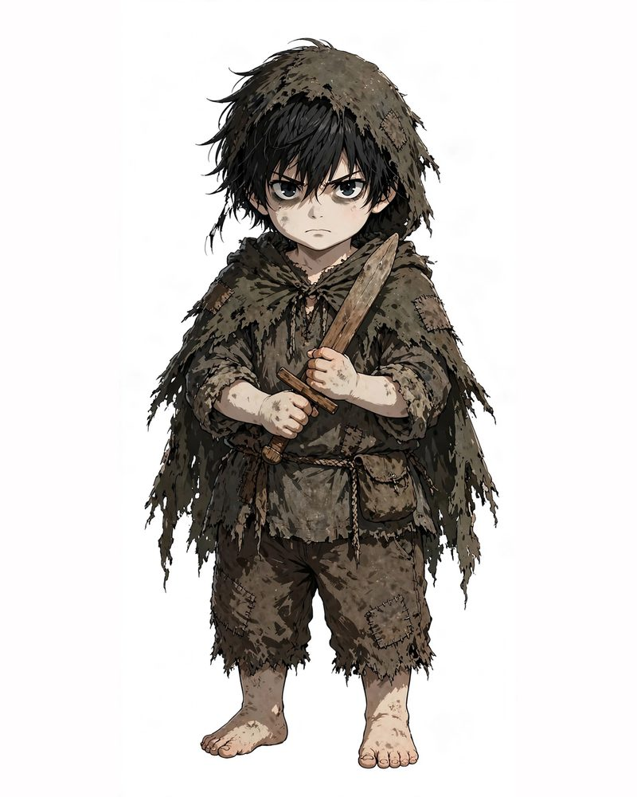
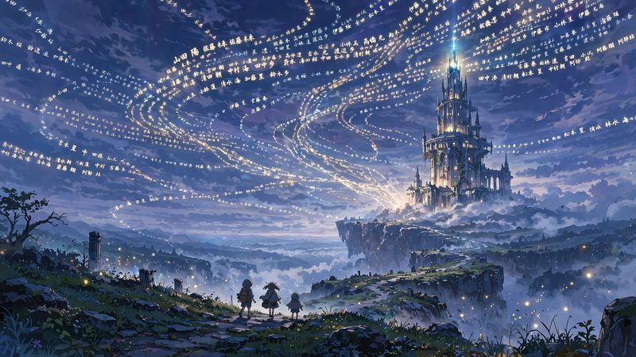

――その神は、人を救わない。前世で剣も人との繋がりも捨てた男の、二度目の人生。異世界転生ファンタジー。
第1話「神は人を救わない」 ― 全文を読む第2話「本気なら、見せてみろ」 ― 全文を読む カクヨムで読む（日本語）
自分の名前が、明日の名簿から消えていた。すべての人の名前が記された「天名簿」をめぐる、異世界×ミステリー。
第1話「消える名前」 ― 全文を読む第2話「先に進む」 ― 全文を読む カクヨムで読む（日本語）奪ったスキルで、運命を書き換えろ。
全40話・324,788文字・異世界ファンタジー
硬い黒パンを半分こした夕べ。身分違いの二人が紡ぐ、切なくも温かい物語
全64話・104,734文字・異世界ファンタジー
業火の女神と血塗れの少年。最高傑作の剣が、運命を切り裂く！
全34話・35,954文字・異世界ファンタジー
逃げるために切り分けた三つの僕。霧深い街の片隅で、歪んだ歯車が真実を刻む
全20話・196,106文字・ミステリー
ゲームの結末を知る俺だけが、この世界の終わりを知っている。
全16話・138,719文字・異世界ファンタジー
無能と呼ばれた王子が、隣国で本当の才能を開花させる。
全12話・103,143文字・異世界ファンタジー
――その声は、本当に「俺」の意思なのか。
全7話・65,960文字・ミステリー